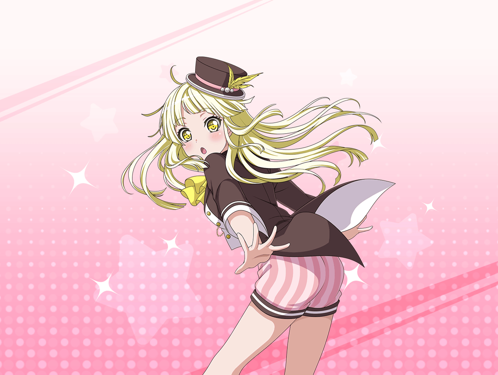

公園
こころ
こんにちは！ 猫さん！
こんなところでぼんやりして、何をしているの？
こころ
……あら、大きなあくびね！ 退屈なのかしら？
こころ
それなら、あたしが楽しいお話を聞かせてあげるわよ！
どんなお話が好きなのか、教えてちょうだい！
こころ
……あ、{{userName}}じゃない！
こころ
もしかして、あなたもこの子とおしゃべりをしに来たの？
こころ
この子？ この子はこの子よ！
このぼんやりしてる猫さんに決まってるじゃない！
こころ
あたしはこの子を笑顔にしようと思ってお話していたのよ！
こころ
……どうしてそんなことをしているのか？
それはね！
こころ
この前、花音がペンギンさんを笑顔にしたの！
こころ
それってすごいことよね？
だって、動物を笑顔にしちゃったんだから！
こころ
だから、あたしも動物を笑顔にしようと思ったの！
こころ
人間だけじゃなく、動物まで笑顔にできたら最高だと思わない？
こころ
これからのハロハピはどんな生き物も笑顔にしていくのが目標よ！
花音のおかげで新しい目標ができて嬉しいわ！
こころ
ふふ、あなたも応援してくれるのね！ ありがとう！
こころ
それじゃあ、まずはこの猫さんを笑顔にするわよ！
こころ
……あれ？ いないわ？
まだ笑顔にしてないのにどこに行っちゃったのかしら？
こころ
……え？ 話してる途中でいなくなっちゃったの？
こころ
花音みたいに動物と仲良しになるのは難しいわね……
こころ
でも、まだまだ始めたばかりだもの。諦めないわ
こころ
それじゃあ、猫さんの代わりに……あ！
こっちにはアリさんがいるわ！ あなたも笑顔にするわよ！